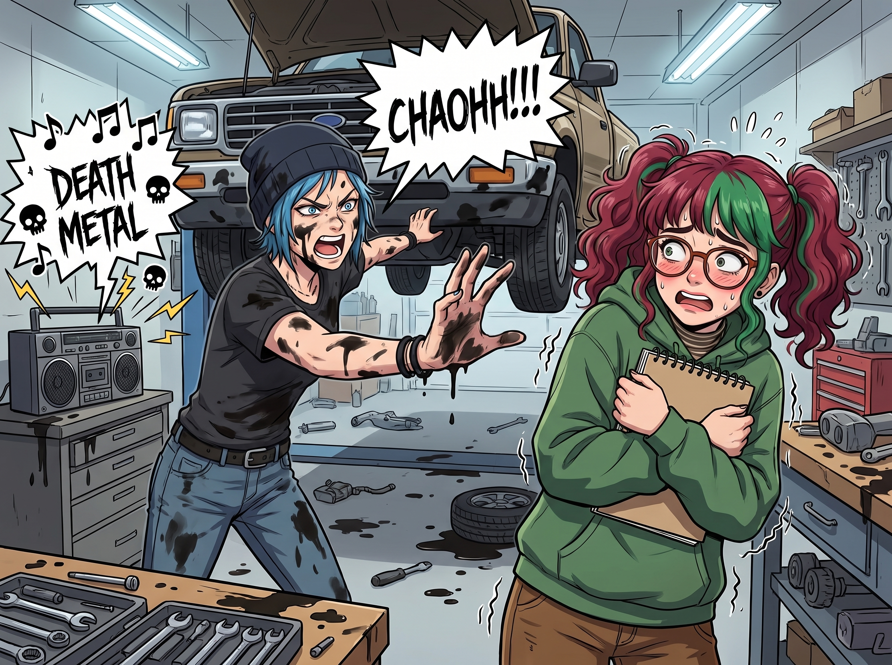

無心重現（倒敘）

當工坊真的迎來第一位名叫 Lily 的實習生時，場面幾乎在第一天就走向了失控。
Lily 是個典型的社恐藝術系女孩：戴著厚重的圓框眼鏡，抱著速寫本，說話聲音比蚊子還小，只要別人稍微提高音量，她就會像受驚的兔子一樣發抖。
一、無心重現的霸凌場景
某個週三下午，工坊裡亂成一團。
Chloe 正在皮卡車底改裝排氣管，音響裡以最大音量播放著震耳欲聾的死亡金屬樂，滿手黑機油，從車底伸出一隻手對著 Lily 大吼：「嘿！新來的！去工作台幫我把那個 10 毫米的套筒扳手拿過來！快點！」
而同一時間，Victoria 手裡拿著 Lily 剛交上來的畫廊宣傳冊排版草圖，眉頭皺得能夾死一隻蒼蠅：「這是什麼？妳的大腦是被快餐店的油炸鍋炸過嗎？我說過我要的是極簡主義！妳現在立刻去給我重做，並且在五分鐘內給我弄一杯溫度精準在 82 度的燕麥奶拿鐵來！」
左邊是震天響的重金屬和藍領猛獸的咆哮，右邊是步步緊逼、語氣刻薄的資本女王。
Lily 抱著速寫本站在中間，眼眶瞬間紅了，肩膀開始劇烈發抖。這一幕，實在太像幾年前 Blackwell 學院走廊裡的場景了。
二、護犢子狂魔的降臨
剛好從暗房裡洗完照片走出來的 Max，以及端著剛出爐司康餅從廚房出來的 Kate，同時看到了這一幕。
Max 手裡裝著底片的小鐵盒掉在了地上。她像一顆出膛的子彈一樣衝了過去，一把將發抖的 Lily 扯到了自己身後，張開雙臂死死擋在 Victoria 和 Chloe 面前：「你們兩個，給我退後。現在。立刻。」
「閉嘴，Price。」Kate 放下烤盤，走到 Max 身邊，臉上的表情平靜得可怕：「把音樂關掉。Victoria，放下妳手裡那份該死的草圖。妳們難道看不出來她快要崩潰了嗎？」
三、惡霸的恐慌
Victoria 愣在原地。當她看著躲在 Max 身後瑟瑟發抖的 Lily 時，她突然意識到自己剛才的語氣有多像當年在 Blackwell 霸凌別人的那個「惡毒女王」。
「我……」Victoria 的臉色瞬間變得慘白，「我不是那個意思……我只是對排版的要求比較高……」
「而我只是想要個 10 毫米的扳手啊！」Chloe 委屈地從車底爬出來，關掉了重金屬音樂。
「妳們的『平時』，對別人來說就是一場災難。」Max 依然沒有解除防禦姿態。Kate 則直接牽起 Lily 冰涼的手，將她帶向溫室：「走吧，Lily。我們去喝杯熱洋甘菊茶。」
四、絕對結界的建立
從那一天起，Lily 在工坊獲得了某種最高級別的免死金牌。
Chloe 再也不敢大聲放音樂了，需要幫忙時會用一種極其詭異的夾子音問：「那個……Lily 小天使，能麻煩妳遞一下那塊抹布嗎？」Victoria 則開始了喪心病狂的物質補償，Lily 只是隨口說了一句「畫室有點冷」，第二天她的椅子上就多了一條價值一千美金的純羊絨披肩。
某天下午，Chloe 忍不住向 Max 抱怨：「Maxine，我們現在連呼吸都要看那個實習生的臉色！我們根本沒有欺負她！」
Max 正坐在沙發上幫 Lily 整理底片，語氣平靜且理直氣壯：「我知道妳們沒有惡意。但在這座基地裡，我和 Kate 是絕對的仲裁者。只要我們覺得像霸凌，那就是霸凌。有意見嗎？」
Chloe 默默嚥了口口水，舉起雙手投降。在這個由倖存者建立的庇護所裡，沒有人會再被逼到角落。
故事的時間點，實際發生在第二季波特蘭工坊時期